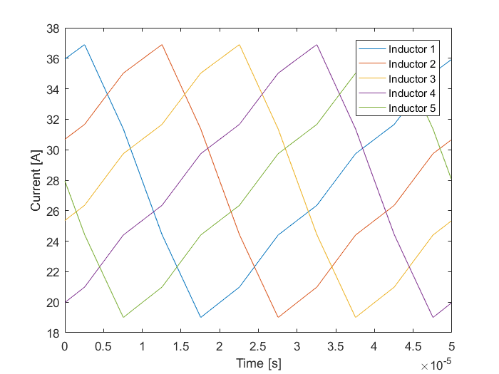

Example output inductor 5-phase DC-DC converter
Problem Description
The following example describes the optimization of the output inductor of a DC-DC with 5 cells in parallel as shown in the following figure
Problem Setup
First, the 5 output inductors are created. These inductors must be exactly equal. As a result, we will make use of the copy function. First the element that will serve as reference object is created.
myInd1 = Comp3d.InductorCustomEI('record',1,... 'name','inductor1');
The rest of the equal inductors are derived from the reference inductor using the following syntax: new variable = reference variable.copyWithReference('name',new name).
myInd2 = myInd1.copyWithReference('name','inductor2'); myInd3 = myInd1.copyWithReference('name','inductor3'); myInd4 = myInd1.copyWithReference('name','inductor4'); myInd5 = myInd1.copyWithReference('name','inductor5');
The optimization problem is created and all the elements are added to it.
myOptProblem = OptimProblem.Optimizer(); myOptProblem.addComp3d(myInd1); myOptProblem.addComp3d(myInd2); myOptProblem.addComp3d(myInd3); myOptProblem.addComp3d(myInd4); myOptProblem.addComp3d(myInd5);
The circuit is described. In these case, interleaving is used to for the parallel cells.
circuit = Ckt.CktComposite();
n = circuit.createNode(9);
circuit.addGnd(n(2));
circuit.addCkt(Vdc(200),{n{1},n{2}});
dcdcConvert = Chopper('topology',[1 1 5]);
dcdcConvert.modul.fCar = 5*20e3;
dcdcConvert.opPoint.alphaBuck = 0.7;
circuit.addCkt(dcdcConvert,{n{1},n{3},n{4},n{5},n{6},n{7},n{2}});
circuit.addCkt(myInd1.electricModel,{n{3},n{8}});
circuit.addCkt(myInd2.electricModel,{n{4},n{8}});
circuit.addCkt(myInd3.electricModel,{n{5},n{8}});
circuit.addCkt(myInd4.electricModel,{n{6},n{8}});
circuit.addCkt(myInd5.electricModel,{n{7},n{8}});
circuit.addCkt(Inductor(100e-6,'out',1),{n{8},n{9}});
circuit.addCkt(Resistor(1,'load',0),{n{9},n{2}});
myOptProblem.circuit = circuit;
Warning: The electric model of Comp3d.InductorCustomEI:inductor1 has changed Warning: The electric model of Comp3d.InductorCustomEI: has changed Warning: The electric model of Comp3d.InductorCustomEI: has changed Warning: The electric model of Comp3d.InductorCustomEI: has changed Warning: The electric model of Comp3d.InductorCustomEI: has changed
In this case the objective function will be to minimize the volume, and the Multi-Start algorithm will be used using 10 start points.
myOptProblem.criteria = {'volume'};
myOptProblem.optimAlgoType = 'GradientDescentMS';
myOptProblem.optimAlgo.options.UseParallel = false;
myOptProblem.optimAlgo.options.NbStartingPoints = 10;
myOptProblem.optimAlgo.options.Display = 'final';
myOptProblem.solveOptimizationProblem;
Local minimum possible. Constraints satisfied. fmincon stopped because the size of the current step is less than the selected value of the step size tolerance and constraints are satisfied to within the selected value of the constraint tolerance. Local minimum found that satisfies the constraints. Optimization completed because the objective function is non-decreasing in feasible directions, to within the selected value of the optimality tolerance, and constraints are satisfied to within the selected value of the constraint tolerance. Local minimum possible. Constraints satisfied. fmincon stopped because the size of the current step is less than the selected value of the step size tolerance and constraints are satisfied to within the selected value of the constraint tolerance. Local minimum found that satisfies the constraints. Optimization completed because the objective function is non-decreasing in feasible directions, to within the selected value of the optimality tolerance, and constraints are satisfied to within the selected value of the constraint tolerance. Local minimum possible. Constraints satisfied. fmincon stopped because the size of the current step is less than the selected value of the step size tolerance and constraints are satisfied to within the selected value of the constraint tolerance. Local minimum found that satisfies the constraints. Optimization completed because the objective function is non-decreasing in feasible directions, to within the selected value of the optimality tolerance, and constraints are satisfied to within the selected value of the constraint tolerance. Local minimum possible. Constraints satisfied. fmincon stopped because the size of the current step is less than the selected value of the step size tolerance and constraints are satisfied to within the selected value of the constraint tolerance. Local minimum possible. Constraints satisfied. fmincon stopped because the size of the current step is less than the selected value of the step size tolerance and constraints are satisfied to within the selected value of the constraint tolerance. Local minimum found that satisfies the constraints. Optimization completed because the objective function is non-decreasing in feasible directions, to within the selected value of the optimality tolerance, and constraints are satisfied to within the selected value of the constraint tolerance. Local minimum possible. Constraints satisfied. fmincon stopped because the size of the current step is less than the selected value of the step size tolerance and constraints are satisfied to within the selected value of the constraint tolerance. MultiStart completed the runs from all start points. All 10 local solver runs converged with a positive local solver exit flag. Successful optimization! Exit flag = 1. First order optimality conditions satisfied.
We display the optimal solution, as shown all the elements are equal.
myInd1.displayInformation;
====================================================
Information of inductor1 [Comp3d.InductorCustomEI]
----------------------------------------------------
Shape
Dimensions
legWidth: 0.00911
legThickness: 0.09798
airGap: 0.0004699
windingCoreDistance: 0.0006
interTurnSpace: 0.0001
nTurns: 7.015
conductorWidth: 0.0005
conductorHeight: 0.02503
----------------------------------------------------
Materials
electricConductor: Copper
electricInsulation: UPETS
magneticCore: 3C90 TM(25-200kHz)
----------------------------------------------------
Geometric Data
Manufacturing Volume: 0.2247 l
Weight: 1.044 Kg
----------------------------------------------------
Cost Data
Total: $ 0.00
----------------------------------------------------
Optimization Constraints
temperatureMax: 80
BsatRate: 0.95
----------------------------------------------------
Electric Parameters
Inductance: 0.0001127 H
DC resistance: 0.002402 Ohm
----------------------------------------------------
Output data
Current Dc: 27.99 A
Current Max: 36.89 A
Current RMS: 28.5 A
Current Ripple: 17.88 A
Current Density: 2.277 A/mm²
Joules losses: 6.494 W
B Max: 0.332 Tesla
Core losses: 0.9771 W
Temperature: 79.87 °C
====================================================
|
myInd2.displayInformation;
====================================================
Information of [Comp3d.InductorCustomEI]
----------------------------------------------------
Shape
Dimensions
legWidth: 0.00911
legThickness: 0.09798
airGap: 0.0004699
windingCoreDistance: 0.0006
interTurnSpace: 0.0001
nTurns: 7.015
conductorWidth: 0.0005
conductorHeight: 0.02503
----------------------------------------------------
Materials
electricConductor: Copper
electricInsulation: UPETS
magneticCore: 3C90 TM(25-200kHz)
----------------------------------------------------
Geometric Data
Manufacturing Volume: 0.2247 l
Weight: 1.044 Kg
----------------------------------------------------
Cost Data
Total: $ 0.00
----------------------------------------------------
Optimization Constraints
temperatureMax: 80
BsatRate: 0.95
----------------------------------------------------
Electric Parameters
Inductance: 0.0001127 H
DC resistance: 0.002402 Ohm
----------------------------------------------------
Output data
Current Dc: 27.99 A
Current Max: 36.89 A
Current RMS: 28.5 A
Current Ripple: 17.88 A
Current Density: 2.277 A/mm²
Joules losses: 6.494 W
B Max: 0.332 Tesla
Core losses: 0.9771 W
Temperature: 79.87 °C
====================================================
|
Waveform drawing.
figure(); plot(myInd1.excitations.electric.time,myInd1.excitations.electric.current,... myInd2.excitations.electric.time,myInd2.excitations.electric.current,... myInd3.excitations.electric.time,myInd3.excitations.electric.current,... myInd4.excitations.electric.time,myInd4.excitations.electric.current,... myInd5.excitations.electric.time,myInd5.excitations.electric.current); xlabel('Time [s]'); ylabel('Current [A]'); legend({'Inductor 1','Inductor 2','Inductor 3','Inductor 4','Inductor 5'});